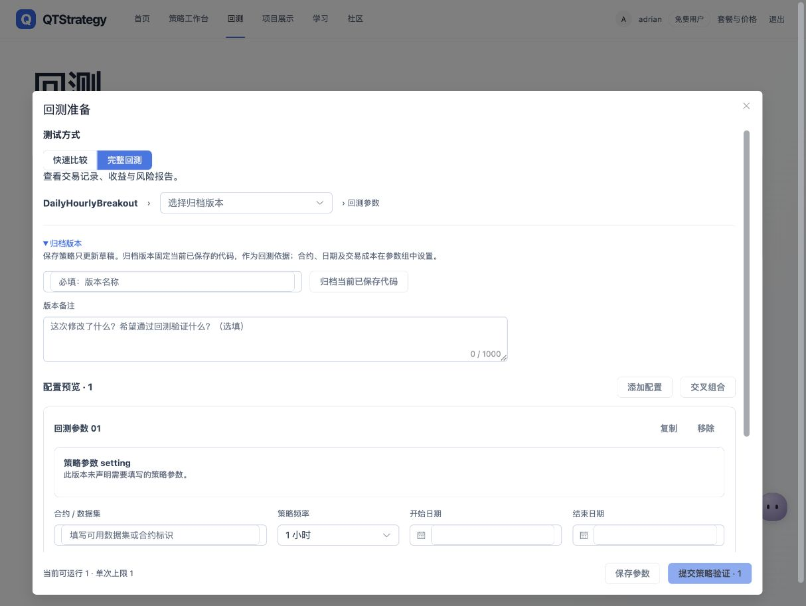
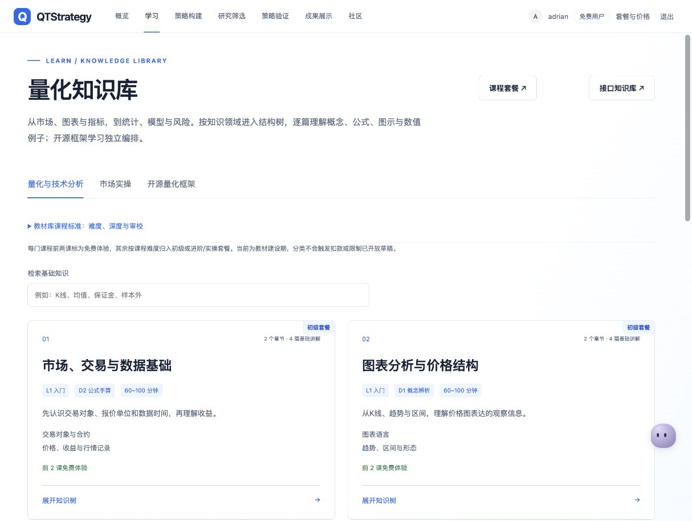

Define the hypothesis
What market behavior does the strategy aim to investigate?
QUANTITATIVE RESEARCH, CONNECTED
Connect strategy thinking, Python development, backtesting, and experiment history in one research workflow.
class ResearchStrategy(CtaTemplate): # Turn a hypothesis into a test def on_bar(self, bar): self.update_signal(bar)
Concept illustration · not a performance claim
Map → Develop → Validate → Backtest → Analyze → Revisit
NEW / STRATEGY MIND MAP
Strategy mind mapping adds a visual layer to the product: a place to organize strategy thinking alongside the research workflow.
What market behavior does the strategy aim to investigate?
Connect data inputs, signal conditions, and risk assumptions.
Decide what to test and which results to inspect.
Concept illustration of strategy structure, not a screenshot of the mind-map editor. Detailed editing capabilities are not demonstrated here.
01 / THE PRODUCT
A backtest is one step. QTStrategy connects the inputs, execution, and context around it, so the next experiment can build on the last.
Prepare strategy versions, review parameters, and configure the dataset and research period before submitting a backtest.

The web experience includes a structured quantitative knowledge library, bringing market concepts, chart analysis, and research foundations into the same product.
View full screenshot ↗
Screenshots show the Chinese-language development interface. Product surfaces and labels may evolve.
02 / THE RESEARCH LOOP
The local research workspace carries an experiment from Python source to archived results.
Edit standard CTA strategies and validate local OHLCV data. Set capital, fees, dates, and parameters.
Examine executed trades, equity, and drawdowns with linked charts and configurable display indicators.
Archive successful runs, compare experiments, and restore strategy snapshots and archived inputs for a new run.
03 / ENGINEERING
The engineering work surrounds an established backtesting engine with task handling, usable interfaces, and persistent experiment context.
Local SQLite history links successful results to strategy snapshots and archived data. Restored experiments retain research context; dependency changes can still affect rerun results.
Successful, failed, and cancelled attempts have distinct records. An interrupted task without an ending record remains visible as unfinished.
The web layer handles browser and HTTP interactions. User operations and backtest execution have dedicated service responsibilities.
The local workspace uses the public vn.py CTA backtesting engine. QTStrategy builds the surrounding editor, analysis views, experiment history, and product workflow.
ACTIVE DEVELOPMENT
This showcase covers implemented research workflows described in the project documentation. It does not provide a live trading service.
Strategy mind mapping, strategy development, backtesting, visual analysis, experiment history, comparison, and export.
Real-account integration, strategy deployment, and order execution. Cross-platform packaging and production readiness require further validation.